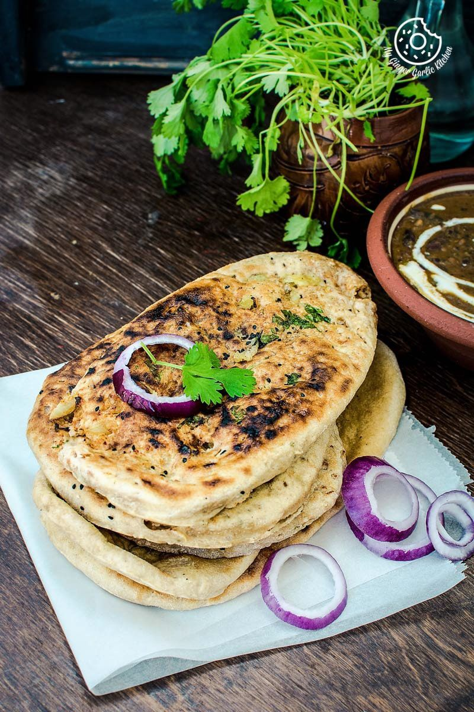

Sahi Panner
Ingredients
- 300gm paneer
- 2 tbsp cashewnut paste
- 2 tbsp vegetable oil
- 1 cup onions, pureed
- 1 1/2 tsp ginger-garlic paste
- 1/2 cup yoghurt
- 1/2 cup water
- 3 1/2 tbsp paneer masala
- Salt to taste
- 1/4 tsp kasuri methi powder
- 1/4 tsp cardamom powder
- 1/2 cup fresh cream
Recipe Instruction
- Prepare Onion Puree
- Prepare Tomato Puree
- Add Ginger-Garlic Paste
- Cook Tomato Puree
- Add Yogurt
- Add Paneer Masala
- Add Cashewnut Paste
- Add Cottage Cheese and Spices

Sahi Veg-Biryani
Ingredients
- 1 teaspoon active dry yeast
- 2 tablespoons sugar
- 1/4 cup water
- 4 cups all-purpose flour
- 1 teaspoon baking soda
- 1 teaspoon baking powder
- 3/4 cup whole milk
- 1/2 cup full-fat plain yogurt
- Cooking oil, for the bowl
- 12 ounces paneer, crumbled
- 1 stick melted unsalted butter
- Kosher salt
Recipe Instruction
- Prepare the Yeast Mixture
- Mix the Dry Ingredients
- Combine Wet and Dry Ingredients
- Knead the Dough
- Let the Dough Rise
- Prepare the Dough for Cooking
- Cook the Naan on the Stovetop
- Broil the Naan with Cheese
